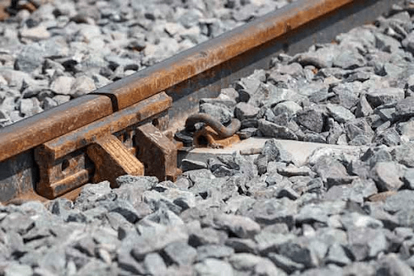

Heavy Angular Basalt Railway Track Ballast
Product Code: P028
RS CONSTRUCTIONS supplies high-grade Railway Ballast crushed from dense basalt hard rock. Featuring sharp angular edges and high impact resistance, our ballast meets strict railway authority standards to lock sleepers securely in place, absorb heavy dynamic loads, and ensure unhindered water drainage.
Technical Specifications & Properties
- Nominal Size: 65mm to 20mm graded coarse aggregate (RDSO compliant)
- Rock Source: High-density Natural Basalt / Trap Rock
- Impact Value (AIV): Below 20% (High resistance to shattering under dynamic loads)
- Abrasion Value (Los Angeles): Below 30%
- Flakiness & Elongation Index: Combined < 20% (Ensures strong mechanical interlock)
- Supply Unit: Per Brass (100 cu.ft) or Tipper Truck/Rake loads
- Tax Rate: 5% GST (Applicable)
Recommended Applications
1. Mainline Railway Tracks & Private Industrial Sidings
Provides the structural foundation under sleepers to hold track alignment, distribute wheel loads over the sub-grade, and absorb vibrations.
2. Heavy-Duty Industrial Drainage & Retaining Pits
Used as heavy coarse stone fill for French drains, retaining wall backfills, and erosion control embankments due to its high void ratio.
Get a Wholesale Price Quote
Contact our sales team today for bulk pricing, bulk delivery options, and technical datasheets.
Request Ballast Quote